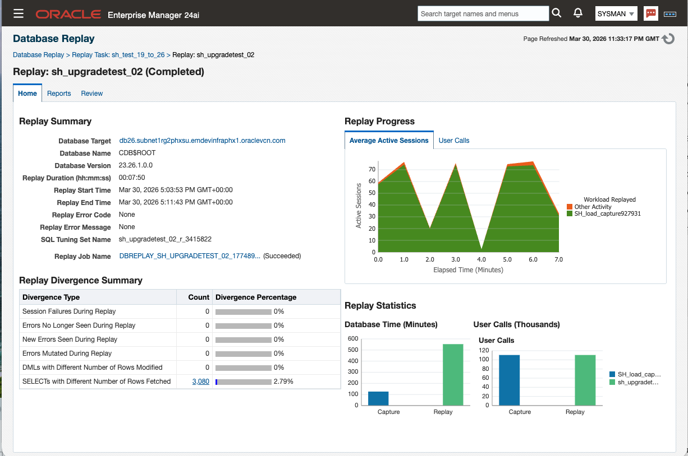

Database Replay Executive Summary
Enter Replay ID:
Notes: In Enterprise Manager integration, Replay ID is captured automatically from the current report context.

Open Executive Summary
Use optional LLM-assisted narrative
Include optional AWR deep-dive